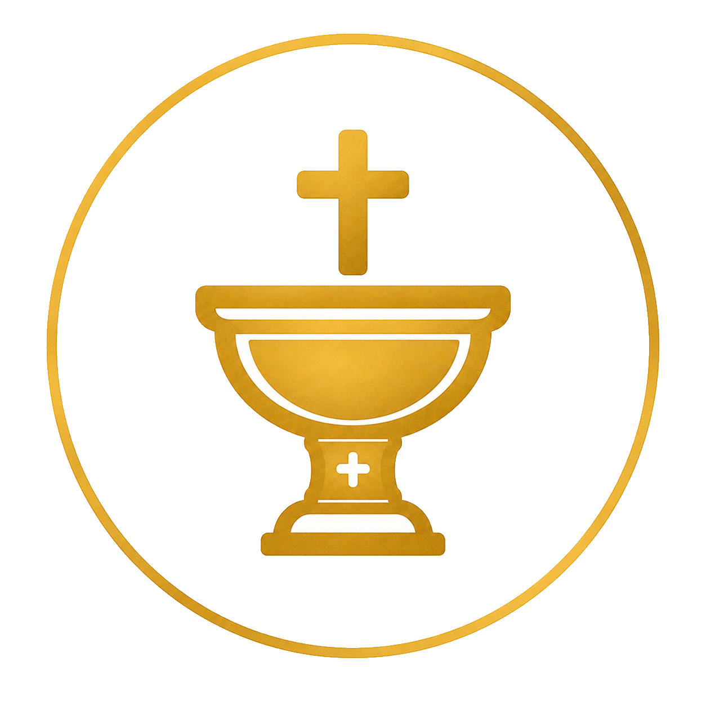
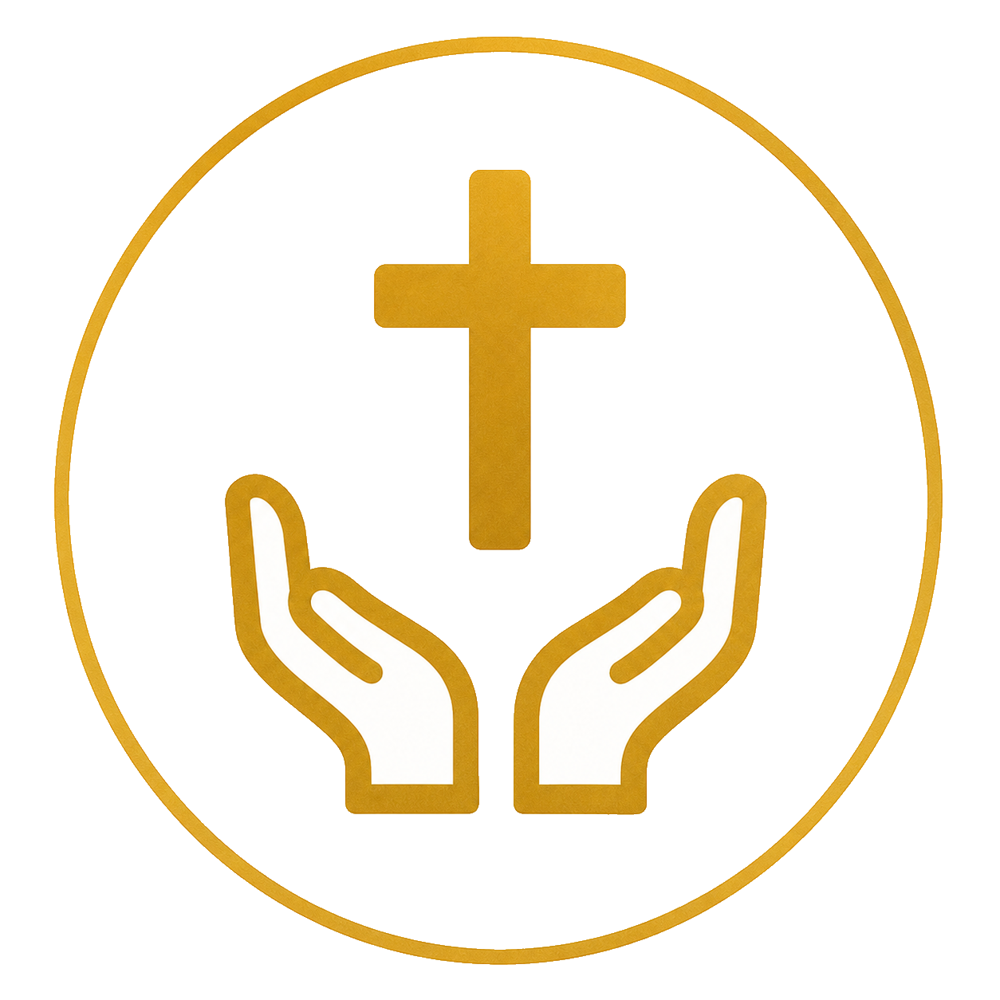

BOTEZ
Taina Botezului este începutul vieții noastre în Hristos. Vă stăm alături în acest moment binecuvântat.
DETALIIBiserica Ortodoxă Română
O comunitate unită în credință, iubire și rugăciune, în patria noastră de suflet.
Slujire și sprijin

Taina Botezului este începutul vieții noastre în Hristos. Vă stăm alături în acest moment binecuvântat.
DETALII
Spovedania ne aduce iertare, vindecare și pace sufletească. Programați-vă pentru întâlnire.
DETALIICu ajutorul dumneavoastră putem continua lucrarea Bisericii și sprijini comunitatea noastră.
DONEAZĂ ACUMProgram liturgic
Programul liturgic este anunțat pe pagina noastră de Facebook:
https://www.facebook.com/biserica4eindhoven
Programul general este afișat la biserică.
VEZI DETALII
Informații
Pagini dedicate pentru taine, donații, istoricul parohiei, fundație și resurse duhovnicești.
Istoricul parohiei și începuturile comunității ortodoxe române din Eindhoven–Tilburg.
CiteșteDatele fundației, scopul, activitățile și administrarea fondurilor.
CiteșteSpațiu pregătit pentru textul complet despre viața Sfintei Cuvioase Parascheva.
CiteșteSpațiu pregătit pentru textul integral al acatistului.
CiteșteListă structurată pentru parohii ortodoxe românești din Olanda.
Vezi listaListă structurată pentru parohii ortodoxe românești din Belgia.
Vezi listaContact
În caz de indisponibilitate, vă rugăm să lăsați un mesaj scris prin WhatsApp sau SMS.
Scanează codul QR pentru a te adăuga în grupul WhatsApp al parohiei și pentru a primi anunțuri, program liturgic și informații importante.
Grupul este destinat anunțurilor comunității Parohiei „Sf. Parascheva de la Iași” Eindhoven–Tilburg.
Deschide WhatsApp
Unde ne găsiți